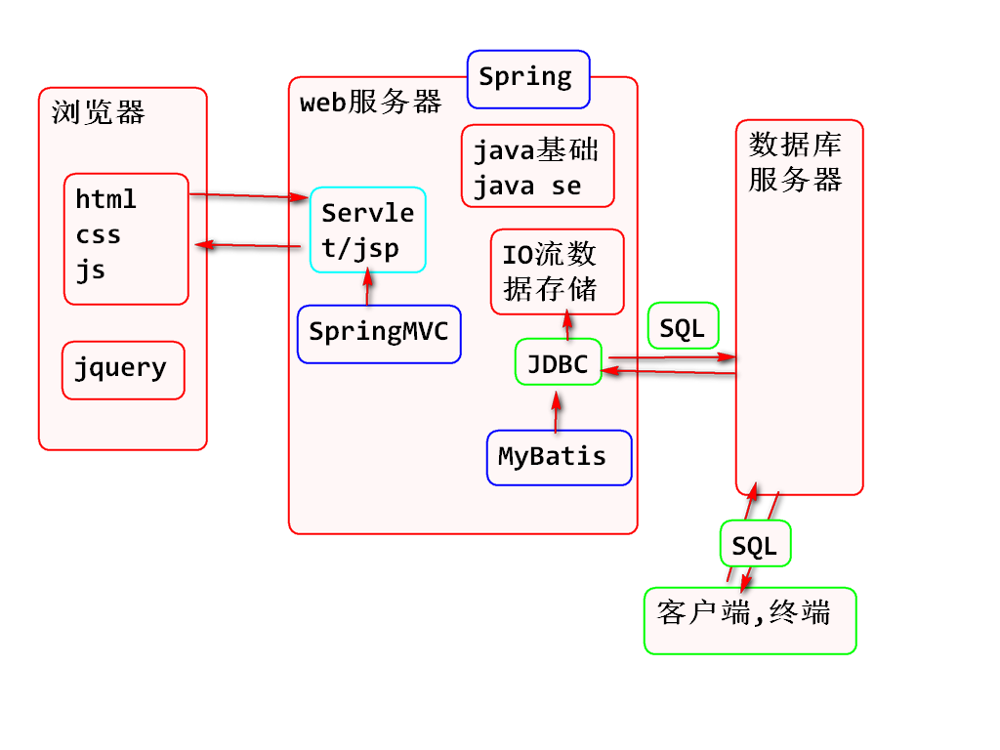

课程介绍：

DataBase：数据库，数据库实际上就是一个文件集合。本质就是一个文件系统，数据按照特定的格式存储到文件中，使用SQL语言对数据进行增删改查操作。
DataBaseManagementSystem：数据库管理系统，管理数据库文件的软件。
MySQL：08年被Sun公司收购，09年Sun公司被Oracle收购，开源。被Oracle收购后出了5.5版本由于使用了Oracle核心技术，性能有了大幅提高，导致Oracle用户流失，公司决定将MySQL闭源。导致MySQL程序员离开并创建了MariaDB。
市场占用最高
Oracle：属于Oracle公司，性能最强大的数据库，而且收费非常高昂，适合不缺钱却缺技术的公司会选用。
市场占用第二
DB2：属于IBM公司，闭源收费，通常一些银行项目会使用。
SQL server：属于微软公司，闭源收费，提供整套解决方案（web服务器、操作系统、数据库服务器等）。
市场占用第三
sqlite：轻量级数据库，应用在嵌入式或义动设备中使用，大小只有几十K，功能和性能较大型数据库要少很多。
开源：公开源代码，免费，大牛程序员会维护和升级。
弊端 ：通过卖服务赚钱，来钱比较慢。
闭源：不公开源代码，收费（卖产品）。
弊端：大牛程序员会攻击找漏洞。
Stuctured Query Language：结构化查询语言，使用SQL语言和数据库服务器进行交互，通过SQL告诉数据库服务器对数据进行什么操作。
1.查看数据库： show databases;
2.创建数据库： create database 数据库名称;
3.查看指定数据库详情： show create database 数据库名称;
4.指定字符集： create database 数据库名称 set 字符集(gbk)；
5.删除数据库：drop database 数据库名称；
6.选中(使用)数据库：use 数据库名称；
1.创建表：
- 格式： create table 表名（字段1名 字段1类型，字段2名 字段2类型，字段n名 字段n类型）
2.查看所有表：
- 格式： show tables;
3.查看指定表详情 和表的字段信息：
- 格式： show create table 表名；
- 格式： desc 表名；
4.创建表指定引擎和字符集：
- 格式： create table 表名（id int,age int）engine=myisam charset=gbk;
5.删除表：
- 格式： drop table 表名；
1.修改表的名称：
- 格式：rename table 原名称 to 新名称;
2.修改表的引擎和字符集：
- 格式：alter table 表名 engine = myisam charset = gbk;
3.添加表的字段：
- (最后面追加)格式：alter table 表名 add 字段名 字段类型;
- (最前面添加)格式：alter table 表名 add 字段名 字段类型 first;
- (某个字段后边插入)格式： alter table 表名 add 字段名 字段类型 after 字段名；
4.删除字段：
- 格式： alter table 表名 drop字段名；
5.修改字段名称和类型：
- 格式：alter table 表名 change 原字段名 新字段名 字段类型;
6.修改字段的类型和位置：
-格式：alter table 表名 modify 字段名 字段类型 first/after 字段名；
一、插入数据：
1.全表插入：要求插入的数据的数量和顺序要和表字段的数量顺序一致。
- 格式：insert into 表名 values(值1，值2.....值n)，(值1，值2.....值n); 【可批量插入】
实例: insert into t_stu values(1,'张三',23);
2.指定字段插入：
- 格式：insert into 表名 (id,name) values(2,'lisi')
3.查询数据：
- 格式：select * from 表名； 【查询所有】
- 格式：select 值1(id),(name)值2 from 表名; 【查询指定】
4.修改数据：
- 格式：update 表名 set 字段名 = 值 where 字段名 = 值；
- 实例：update t_stu set name='卷帘大将',age=200 where id=5;
5.删除数据：
- 格式：delete from 表名 where 字段名=值;
- 实例：delete from t_stu where name='八戒';